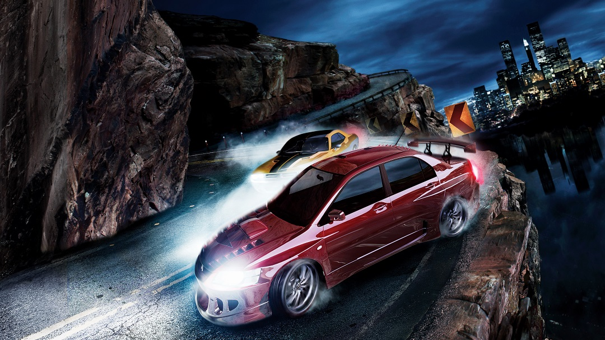
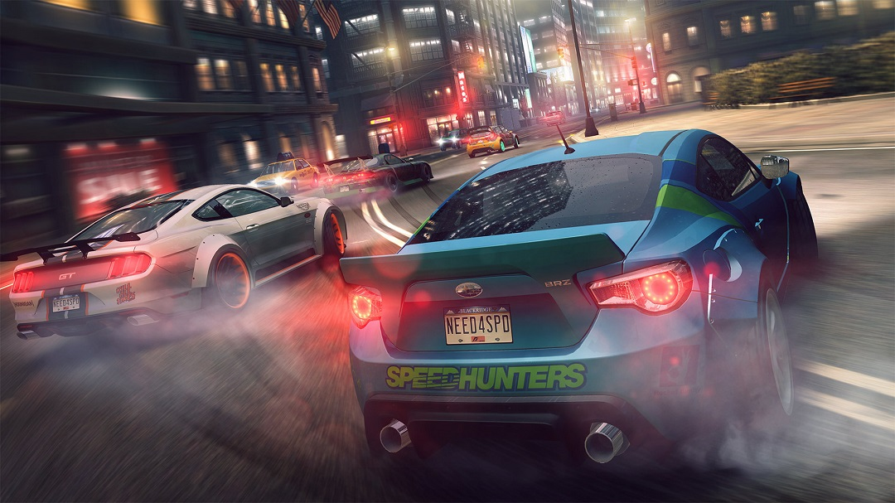
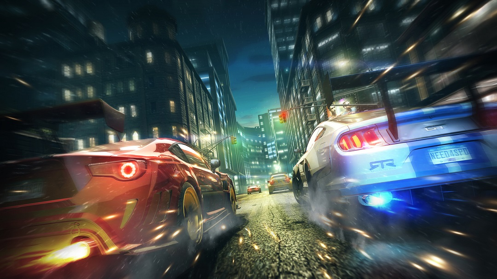
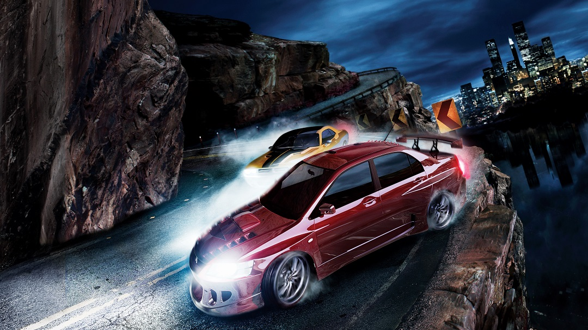
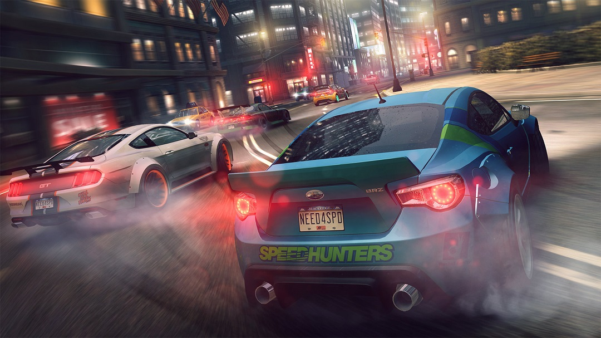
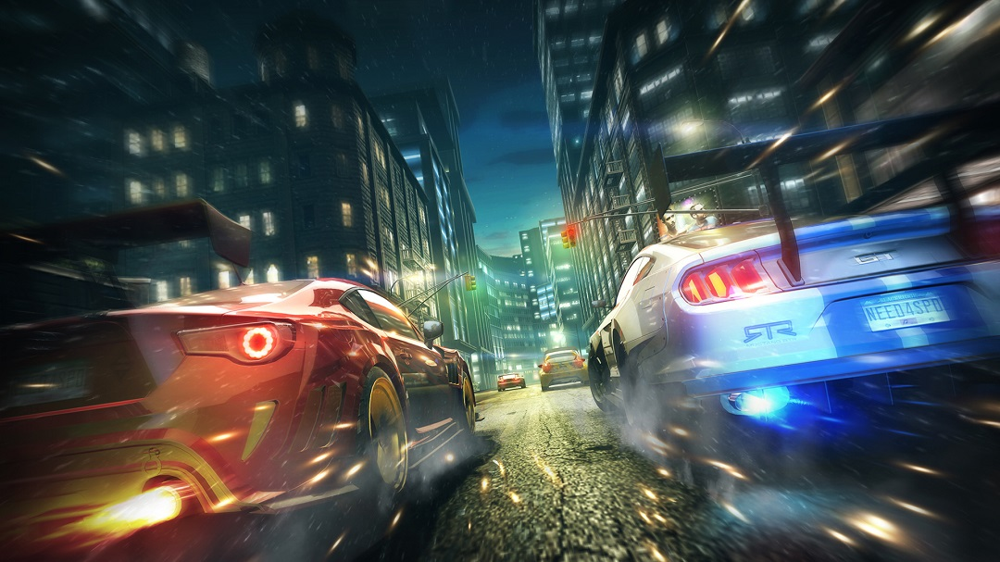
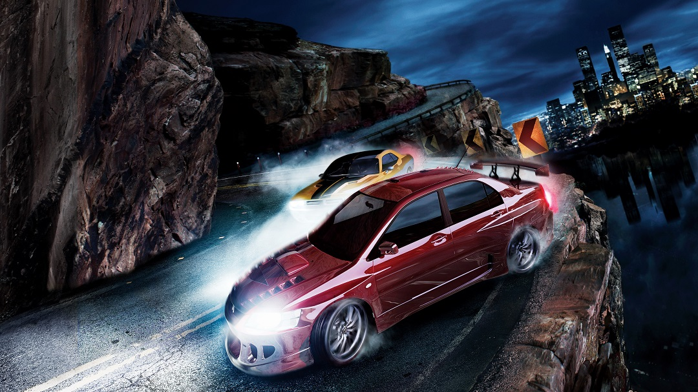
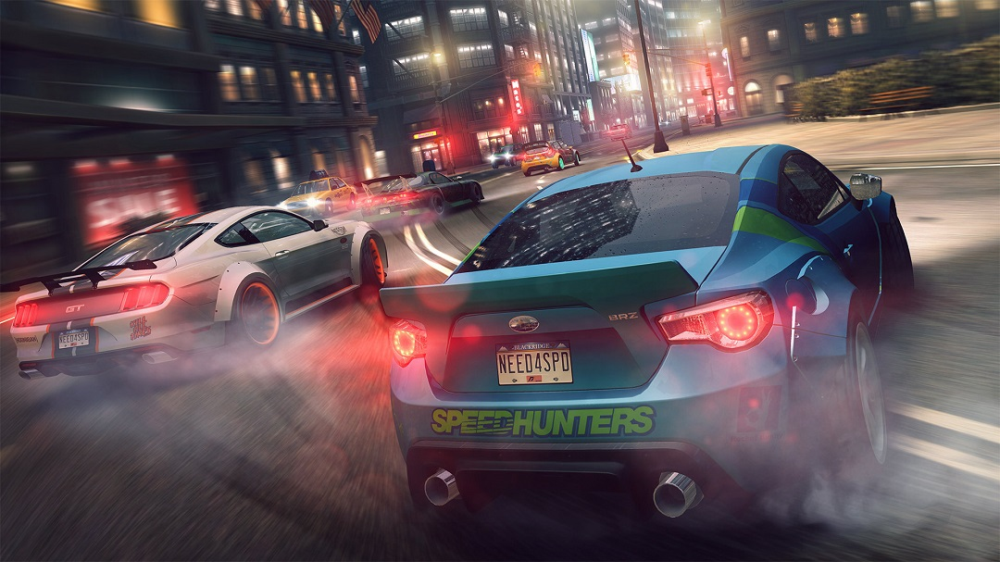
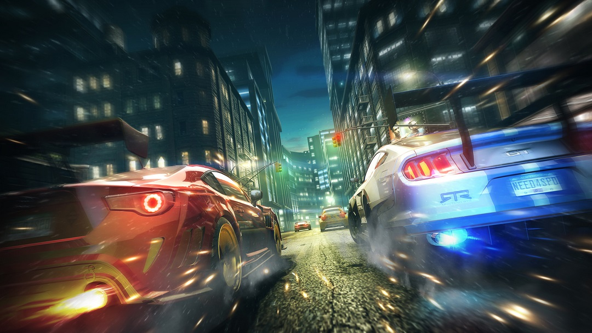

Need for Speed (NFS) is a racing video game franchise published by Electronic Arts and currently developed by Criterion Games, the developers of Burnout.[1] The series centers around illicit street racing and in general tasks players to complete various types of races while evading the local law enforcement in police pursuits. The series released its first title, The Need for Speed, in 1994. The most recent game, Need for Speed: Hot Pursuit Remastered, was released on November 6, 2020.



The series has been overseen and had games developed by multiple notable teams over the years including EA Canada, EA Black Box, Slightly Mad Studios, and Ghost Games. The franchise has been critically well received and is one of the most successful video game franchises of all time, selling over 150 million copies of games.[2] Due to its strong sales, the franchise has expanded into other forms of media including a film adaptation and licensed Hot Wheels toys.[3]
Almost all of the games in the NFS series employ the same fundamental rules and similar mechanics: the player controls a race car in a variety of races, the goal being to win the race. In the tournament/career mode, the player must win a series of races in order to unlock vehicles and tracks. Before each race, the player chooses a vehicle and has the option of selecting either an automatic or manual transmission. All games in the series have some form of multiplayer mode allowing players to race one another via a split screen, a LAN or the Internet. Since Need for Speed: High Stakes, the series has also integrated car body customization into gameplay.